This Quick-Start Guide has been made to allow you to jump into the game with just the basics. The full manual is available here or (alternatively) in the Steam/steamapps/common/Empires/Manual folder.
Section I: Ingame Basics
Starting Off
 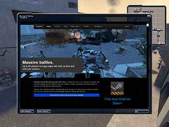
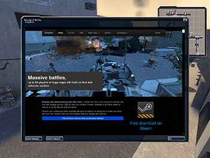2. The Team Selection Screen.1. The Message Of The Day.
1. The first thing you see when you join a server is the Message Of The Day. It often shows rules about that specific server, so read up and close it.
2. The second window that pops up is the Team Selection Screen. Click Auto-Assign to be assigned to the team with the fewest players.
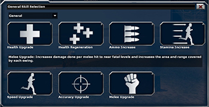

4. The Skill Selection Screen.3. The Class Selection Screen.
3. After choosing a team you will be presented with the Class Selection Screen. The default selection is the Engineer. An Engineer can do everything you need early in the game, so you'll be prepared for anything that hits you.
HINT: Weapon slots with a number in the top right corner can be clicked on to select from a choice of weapons.
4. Click on the open Skill slot (the box on the bottom left) and select a Skill from the Skill Selection Menu. To reach class-specific skills, click on the dropdown box in the top left and select "Class-Specific". When you're done, click "Accept". Alternatively, you can use the pre-selected skills. Suggestion for Engineers: "Repair upgrade" and "Revive" are both excellent starting skills for your class.
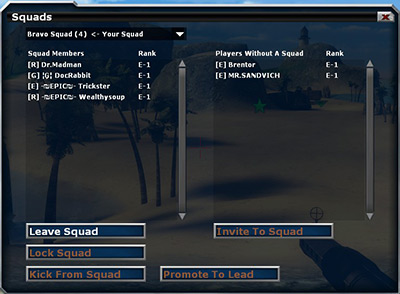
5. The Squad Screen.
5. Now its time to join a squad. Select a squad from the dropdown menu and press the join squad button. If you stick close to your Squad Leader (Green Star), you'll gain points faster. If you join an empty squad, you become the Squad Leader. Squad Leaders can use squad points for various battlefield benefits dependant on their class by using the Popup/"F" menu ('F' by default).
Close the screen when you're done. (This can be opened anytime by pressing 'C' by default).
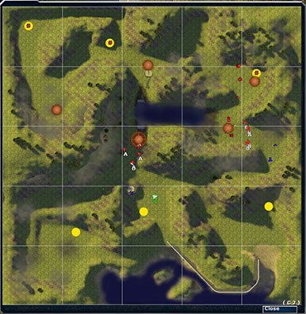
6. The Spawn Map.
6. This will bring up the spawn map (if it doesn't, press 'Enter' (by default) to bring up the spawn map) . Select your spawnpoint (big red or blue circular buttons, depending on team) by left-clicking on one. Your selected spawn point becomes highlighted by the larger circle surrounding it. (In this case the south most, middle spawn is selected).
[OPTIONAL] If the game has just started, you will also have to select a Commander using the Commander Voting Menu. Click on a name to vote for the
chosen player. In the case of a tie, the Commander is randomly chosen from the contestants.It
is strongly reccommended that players don't command until they
are proficient at the game, as the role of the
commander is vital to the success of the team.
You can opt in or opt out of commanding by clicking on the corresponding buttons in the bottom corners of the menu. If you don't know how to command or do not wish to command, just opt out.
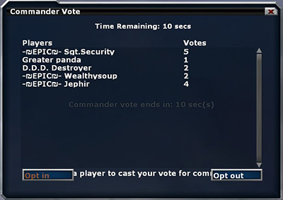
The Commander Voting Menu.
7. Press the Attack key (Left mouse button by default) to spawn.
Hint: If you don't spawn, reselect your Class and Spawn point (as described in points 3. and 6.)
Your HUD
Ok, you've spawned. First some info about your HUD. It's divided into four blocks:
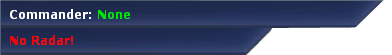Your current Commander.
Current ongoing Research.
1. The upper-left corner shows your current Commander and ongoing Research.

Res/sec. Available Resources. Personal Wages. Vehicles On The Field. Team Tickets.
2. Your Minimap.
2. The upper-right corner shows information about how many resources and reinforcements the team has available.
- Reinforcements (a.k.a. "Tickets") show how many times your team (and the other team) can spawn.
- Vehicles on the battlefield.
- Wages - Personal Cash.
- Resources - Team Cash.
- Res/Sec - How much Resources your team makes per second.
2. The minimap gives an overhead view of the whole map. You can zoom in and out using the zoom keys ('[' and ']' by default).
On the minimap, Brenodi Empire units are always blue and Northern Faction units are always red.
- The Commander is shown as a camera cross icon. If your team has a commander, his name will be shown in the top left corner of the screen.
- Revive Engineers are identified by lighter coloured minimap arrows (light blue for Brenodi Empire and pink for Northern Faction).
- Players are arrows. You yourself are represented as a larger, transparent arrow.
- Vehicles look like small chassis:
- Every type of structure has its unique icon on the minimap:


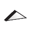 
Refinery Barracks Armory Vehicle Factory Radar Repair Station Turret (any type) Engineer Radar / Camera - Unbuilt structures are colored yellow.
- Built structures that are under attack will flash white.
| Brenodi Empire | 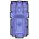 | 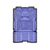 |  |
|
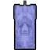 | 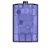 |  |
| Command Vehicle | Jeep | APC | AFV | Medium Tank | Heavy Tank | Artillery Tank | |
| Northern Faction | 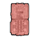 |  |
 |
 |
 |
 |
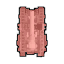 |
| Command Vehicle | Jeep | APC | Light Tank | Medium Tank | Heavy Tank | Artillery Tank |
4. Your Ammo Counter.3. Your Health and Stamina Bar.
3. The lower-left corner displays your Health and Stamina. Your Health will go down when you take damage and can be replenished by Health crates or Engineers using the Engineer Tool on you. Stamina, used when jumping and sprinting, always regenerates over time. If you completely run out of stamina, it will not regenerate for a few seconds.
4. The lower-right corner shows your ammo counter. The line of bullets represents the amount of ammo remaining in your current magazine. The number to the right is the remaining ammo you have.
Move / Guard
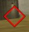
Attack
When you are given an order it will appear on your screen as either:
- a green pentagon (for move and guard orders), or
- a red diamond (for attack orders). The attack order diamond will follow the unit that you are ordered to attack, giving you both direction and a tactical advantage.
Ingame Interaction


Northern Faction Crates.Brenodi Empire Crates.
Located in Armories, placed by Engineers, and
sometimes scattered around maps are supply crates. They come in two flavors:
Ammo (the Engineer crate falls under this) and Health. To use one of these crates hold down the
"USE" key ('E' by default) when near the crate and looking at it.
Similar to crates are the vehicle factory consoles. To access one, move in front of it and then press the
"USE" key.
Empires has many different vehicles. To enter a vehicle, simply go up to it and press the "USE" key. You can switch positions inside the vehicle by using the function keys (F1, F2, F3, etc). The F1 position is always the driver position. Pressing the "USE" key again will exit the vehicle. DO NOT drive vehicles that other players may be using. Instead, build your own at a Vehicle Factory.
Section II: Playing The Game
In Empires, TEAMWORK IS KEY. Go in alone and you'll take out two or three guys, go in with your teammates and you'll take out an entire forward base.
The Basics
Basically, every game of Empires goes like this:
- Move out right away to where your teammates are defending or attacking. If the game just started, listen to your Commander's strategy.
- Capture and defend your resource nodes so your team gets resources.
- Attack the enemy's resource nodes to cripple their economy.
- Seize enemy outposts and push towards their main base.
- Kill the enemy Command Vehicle or deplete all enemy tickets and kill all enemies that are still alive.
- If both teams have depleted their tickets, the game starts a 5-minute countdown. When finished, the game goes into Sudden Death. Both Command Vehicles will now die from a single hit from any explosive.
These are the basic steps in Classic gameplay. There is also Conquest gameplay, which is usually a map with Infantry and Tanks, but no Commander. Then there's Mission gameplay, where one team has a set goal they must achieve, usually in a set time period. Conquest and Mission maps often use Flags as spawnpoints.
Infantry Tips
"I find your lack of faith... disturbing."
General infantry tips:
- You can choose a spawnpoint from the spawn map, ("Enter" by default). Next time you die, you'll spawn there.
- You can change Classes and Skills in a Barracks, an Armory or at a Flag by pressing "b" (by default) and selecting your new loadout. Changing them anywhere else will not update them immediately.
- You can get extra ammo from Engineers who drop ammo boxes or in Armories.
- Pressing the "F" key (by default) will bring up the popup menu. You can use the mouse or the keys shown inside the brackets to select different menus.
- Guns do not damage tanks or buildings (including turrets). Only explosive devices damage tanks or buildings.
- As a non-Engineer, you can help construct a building by holding the USE key ("E" by default).
- Headshots do additional damage depending on the weapon used.
An unintended 'feature' you'll see a lot is killspawning. This is where you type '!kill' in chat or ('kill' in the game console) to spawn back at a location that is under siege. It's a very handy way of quickly moving troops around the battlefield, but be careful not to use up too many tickets.
General Class guidelines:
- Engineer: The ultimate support class. SMG's are effective against all enemies and seismic grenades deal large amounts of damage to buildings. The build tool can place buildables and ammo boxes, construct or destroy buildings and vehicles, and (with the Revive skill) revive fallen teammates.
- Rifleman: Highly effective against all classes, his sticky bombs can destroy tanks. Though very simple in concept, the rifleman can be a killing machine in the right hands. However, he is highly ineffective against buildings.
- Grenadier: With his RPG, mortar and land mines, he's the best anti-tank class. With practice, the mortar can take out any target, while mines can be stacked in a pile to destroy any tank.
- Scout: Primarily used for disrupting enemy assets. Can sabotage buildings to make them vulnerable and less effective. His grenades disorient and weaken enemies. Hard to learn, harder to master.
Engineer tips:
- Using your Engineer Tool, you can build, repair and heal friendly buildings, vehicles and players by holding fire (left-click). You can also deconstruct enemy vehicles and buildings.
- With the Engineer Tool out, right-click for personal building options.
- The Repair Upgrade Skill is very handy in the beginning of the game.
- Using your Revive Skill, you can bring dead teammates back to life. Just get near their corpse and hold the left mouse button (uses up 50% energy). A revive icon will float above bodies of dead teammates.
- Engineer grenades are good against buildings.
- Engineer Cameras spot infantry and Radars spot vehicles. A large yellow diamond will appear briefly around a spotted enemy.
Vehicle Tips
General vehicle tips:
- You can build vehicles in the Vehicle Factory. Go to the vehicle building console or press 'V' (by default) when in the vehicle factory.
- Vehicles can be upgraded with new weapons, armors or engines
that are researched by the commander using a radar building. Press
the "CUSTOMIZE" button
to start upgrading your vehicle.
- Vehicles can be recustomized by pressing 'V' (default) whilst in a vehicle on a repair pad. Ammo will also be refilled whilst your vehicle is on a repair pad.
- Vehicles cost resources. Don't waste them or your team may lose.
- Vehicles can overheat if they fire too quickly. Upgraded engines can help delay overheating.
- Make sure you use the right weapon for the right job. Some weapons may be weak against infantry, but strong against tanks, and vice versa. Ask around if you need help deciding.
- Watch out for mines. They cause a lot of damage to vehicles. A single mine can cripple a non-upgraded vehicle.
Tips on making your vehicle:
- Vehicles have a weight limit, shown in the lower left corner. If it goes red, you won't be able to build your vehicle.
HINT: It's good practice to make the best use of the weight restrictions on your vehicle, but always choose a lot of armor over a lot of weaponry. - Don't take the biggest, newest tank if your team doesn't have a lot of resources. Two fully upgraded Medium Tanks cost the same as one fully upgraded Heavy Tank, but the two Mediums have numbers and firepower per second on their side.
- Sometimes there are a lot of different weapons, armor, or engines you can choose to put on your vehicle. If you're not sure what type of tank you should make or how you should customize it, don't be afraid to ask your teammates for advice.
- The starting armor, engine and weapons are very weak. Use a researched armor, engine or weapons whenever possible. If important research is nearly done, just wait until it's finished before customizing your tank.
Commander Tips
Commanding and Research is explained in the full manual, which is available here or (alternatively) in the Steam/steamapps/common/Empires/Manual folder.
But there's one thing you should know about the Commander. He's got the hardest job of them all, so cut him some slack when it's not going too well.
That's pretty much it. Stick together, listen to your Commander and use tactics instead of only raw firepower and you'll have a great time. Enjoy your first game of Empires.